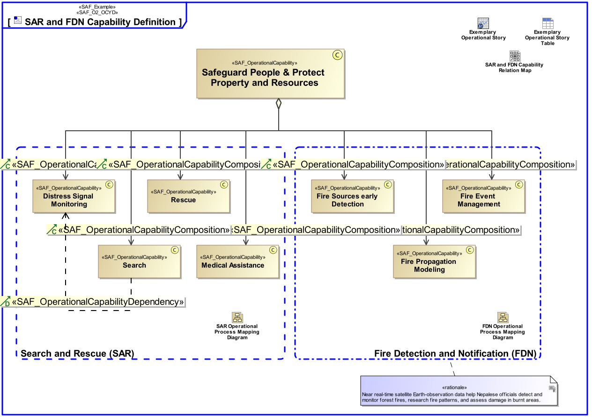
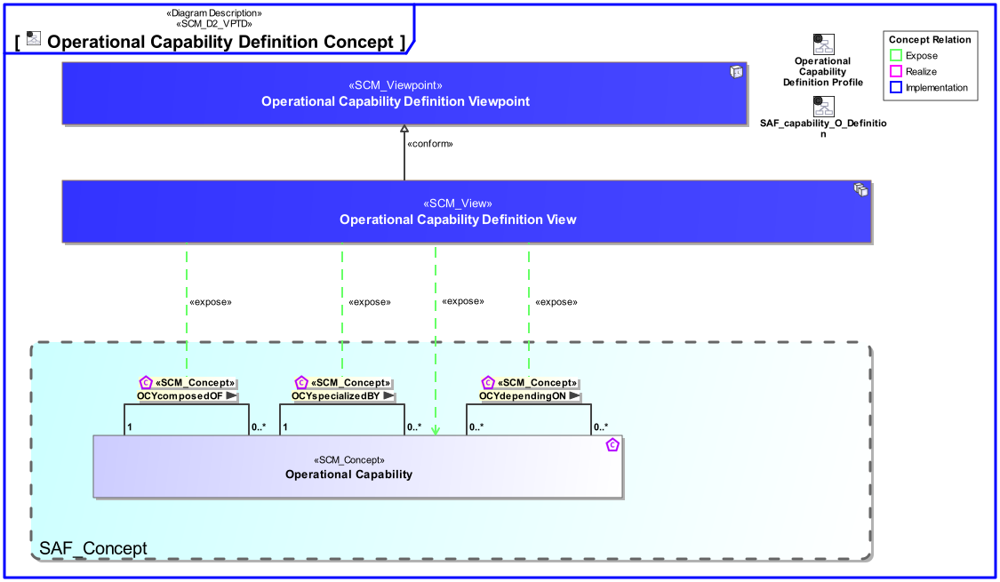
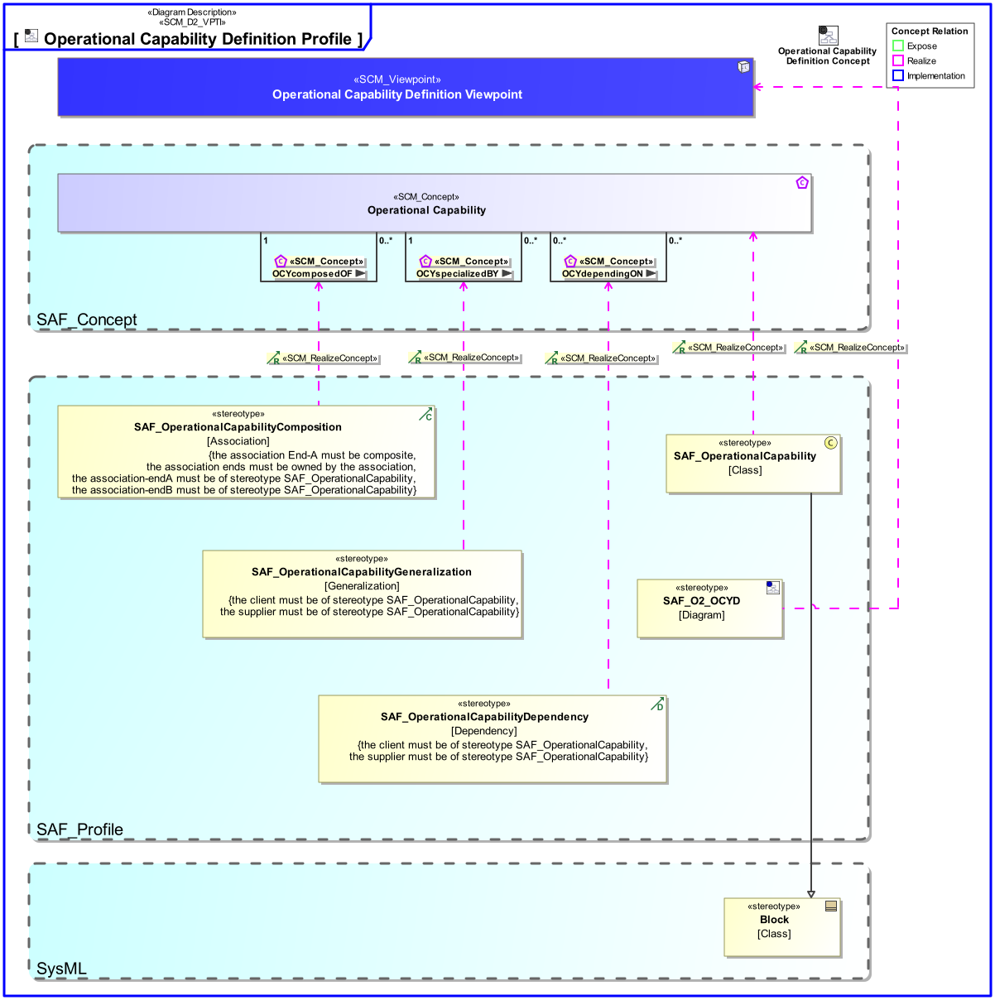

O2_OCYD Operational Capability Definition Viewpoint
| Domain | Aspect | Maturity |
|---|---|---|
| Operational | Taxonomy & Structure |

The Operational Capability Definition Viewpoint defines a taxonomy of Capabilities from a Stakeholder’s perspective including composition, specialization, and dependency relationships between Operational Capabilities.
The Operational Capability Definition Viewpoint supports the “Business or Mission Analysis Process” activities of the INCOSE SYSTEMS ENGINEERING HANDBOOK 2023 [§ 2.3.5.1] defining Capabilities at an operational level (e.g., business or mission profile, and operational scenarios). The Operational Capability Viewpoint contributes to the problem or opportunity statement.
A block definition diagram (BDD) featuring Operational Capabilities, their composition, specialization, and dependency relationships.
The following Stereotypes / Model Elements are used in the Viewpoint:
The Diagram shows the concepts exposed by the viewpoint, and related concepts if necessary.

| Concept | Documentation |
|---|---|
| OCYcomposedOF | Specifies the fact that an Operational Capability consists of other Operational Capabilites. |
| OCYdependingON | Specifies the fact that an Operational Capability depends on another Operational Capability. Aliases: UAF::CapabilityDependency |
| OCYspecializedBY | Specifies the fact that an Operational Capability is specialized by other Operational Capability. Aliases: UAF::CapabilityGeneralization |
| Operational Capability | A Operational Capability is a high-level description or specification of an organizational unit's ability to execute a specified course of action, to implement a business process or to provide a service. Operational Capabilities typically require people, processes, infrastructure, technology and supporting systems to be implemented. A Operational Capability is an enduring element, its implementation may change over time. A necessary or desired change of a Operational Capability triggers the updated of involved systems or the integration new systems. Aliases: UAF::Capability NAF4::Capability |
The Diagram shows the implementation of exposed concepts.
